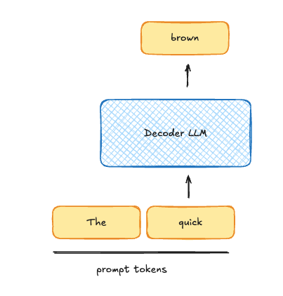
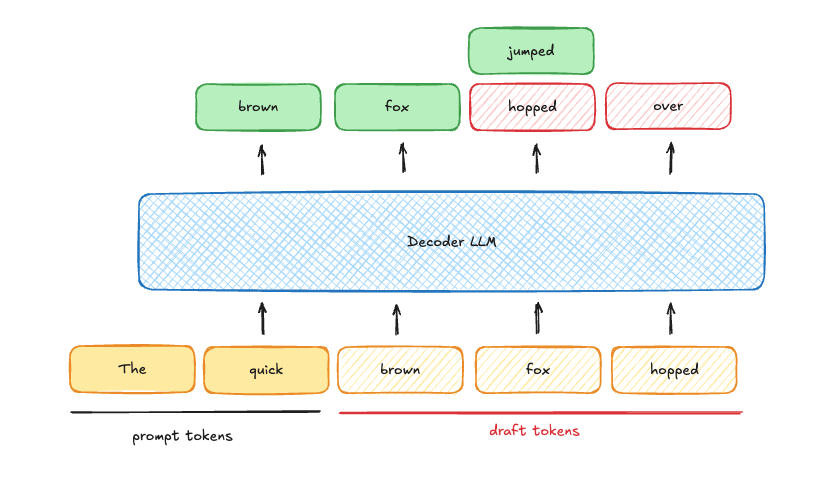
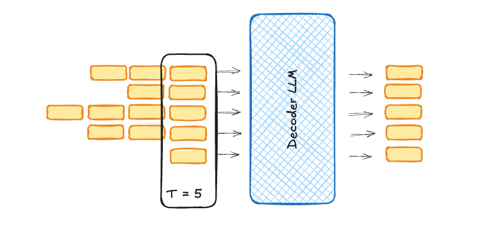
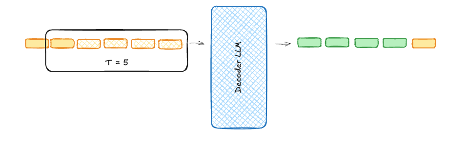
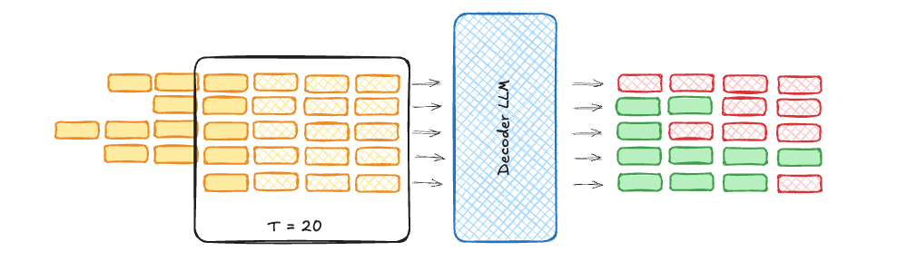
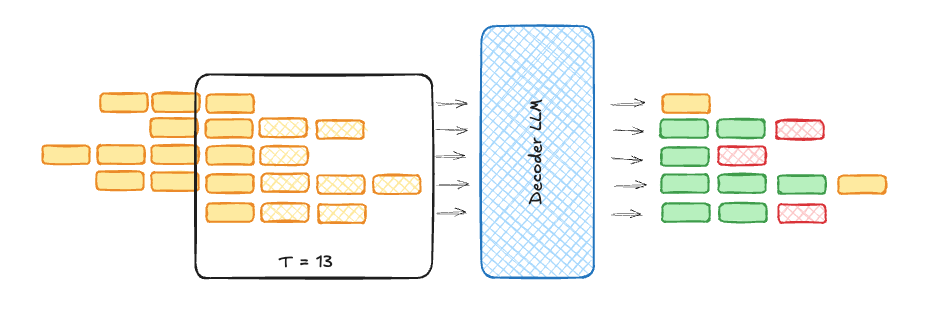

Why is Speculative Decoding Fast?
It's not because you do less work. It's because you change the kind of work the GPU is doing.
There is a common misconception that speculative decoding is fast because you do less work per token. That just “verifying” a draft requires fewer FLOPs than generating the same tokens.
This is untrue.
One of the counterintuitive things about speculative decoding is that you actually do more work! The total number of floating point operations (FLOPs) you execute goes UP for the same sequence.
But then why is it fast? What exactly does an accurate draft model buy you, if it’s not compute efficiency?
The answer lies in the type of work your GPU is doing.
Quick SpecDec Refresher
Speculative Decoding is a technique where you use a small draft model to propose a likely draft sequence, and then you use your big model to verify that sequence in parallel (in a single forward pass).
Traditional LLM decoding goes one token at a time:

But speculative decoding allows you to look at many tokens at once, and accept the ones that would have been generated by the big model:

Types of Work
When a model runs on a GPU, there are different types of work going on. The obvious one is running the matrix multiplies, dot products, or other tensor operations. But an important less obvious one is: loading data from global memory to local memory (and vice versa).
When the GPU is waiting on data to load for an operation, we call that a memory bound operation. If everything is loaded but we’re waiting on all the tensor operations to finish, we call that a compute bound operation.
(For a more in-depth exploration of this, I have a prior post: A Visual Guide to the Roofline Model)
When an LLM is decoding one token at a time (as in the first figure), it is very memory bound. For every token we have to stream all the active parameters of the model (e.g. 27B parameters for Qwen3.5-27B). When an LLM is doing a batched decode (as in the second figure) of thousands of tokens in a single step, it’s compute bound.

When LLM decoding is memory bound, you’re wasting compute. The GPU could be doing more operations, but it’s not. For instance, if you were decoding 2 sequences instead of 1, it wouldn’t take any more time per token.
Speculative decoding is a way of using that extra compute to make decoding faster (at low batch sizes).
Trading Breadth for Depth
To make this concrete, let’s say the optimal number of tokens to run is 5 in a given forward pass. If we ran any fewer, we’d be memory bound, any more and we’d be compute bound.
We have two options.
First, we can run a batch size of 5 sequences, each decoding one at a time. We’ll say this is “breadth” (across sequences):
Alternatively, we can use speculative decoding to run 5 tokens in one sequence, achieving high “depth” for that sequence:

In both cases, the GPU is doing roughly the same amount of work. In the first case, all 5 sequences make a little bit of progress, in the second, our one sequence makes a lot of progress.
If you add more sequences and speculate to the same depth, you’ll just be slowing them all down as you’re compute bound.
But at small batch sizes (where batch size << optimal number of tokens), speculative decoding allows you to use “free” compute to complete all the sequences faster!
Why Does This Matter?
This might all sound a little pedantic. Speculative decoding does make things faster at small batch sizes, so who cares if it’s as much or more work?
This becomes important when you start to serve real-world loads or digging into speculative decoding research. If the optimal batch size is 5 but we’re running with speculative decoding on, as in the following figure, we’re actually wasting compute when we could be using that time to move memory!

Especially if our acceptance rate isn’t 100%, every rejected token is extra wasted work.
This is why, at high throughput, vLLM gives you the configurability to totally turn off speculative decoding with the --speculative-disable-by-batch-size param.
And researchers looking at this picture started to wonder: why would we speculate to the same depth at every timestep? Why not speculate deep when we have extra compute (small batch size), and shallow, or even dynamically per sequence, when we have a larger batch size:
